일반기계기사 (2013-03-10 기출문제)
1과목: 재료역학
1. 두 개의 목재 판재를 못으로 조립하여, 그림과 같은 단면을 갖는 목재 조립 보를 제작하였다. 이 보에 전단력이 작용하여, 두 판재의 접촉면에 보의 길이방향으로 균일하게 200kPa의 전단응력이 작용하고 있다. 못 하나의 허용 전단력이 2kN이라 할 때 못의 최소 허용간격은?
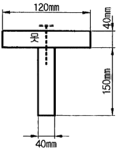
- 0.1m
- 0.15m
- 0.2m
- 0.25m
(정답률: 14%)

2. 직육면체가 일반적인 3축응력 σx, σy, σz를 받고 있을 때 체적 변형률 εv는 대략 어떻게 표현되는가?
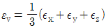
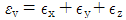
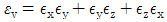
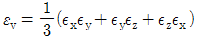
(정답률: 50%)
3. 지름 약 4cm의 둥금 강봉에 60kN의 인장하중을 작용시키면 지름은 약 몇 mm만큼 감소하는가? (단, 탄성계수 E = 200GPa, 포아송 비 v = 0.33 이라 한다.)
- 0.0⑤13
- 0.00315
- 0.0⑤96
- 0.00⑤96
(정답률: 54%)
4. 지름 8cm인 차축의 비틀림 각이 1.5m에 대해 1° 를 넘지 않게 하기 위한 최대 비틀림 응력은 몇 MPa인가? (단, 전단 탄성계수 G = 80GPa 이다.)
- 37.2
- 50.2
- 42.2
- 30.5
(정답률: 52%)
5. 그림과 같이 양단이 고정된 단면이 균일한 원형단면 봉의 C점 단면에 비틀림 모멘트 T가 작용하고 있다. AC 구간봉의 비틀림 각을 구하는 미분 방정식은? (단, A, B 고정단에 생기는 고정 비틀림 모멘트는 각각 TA, TB (TA + TB = T)이고, 이 봉의 비틀림 강성은 GIp 이다. 또, 이 문제에 관한한 비틀림 각 θ 의 부호는 무시한다.)
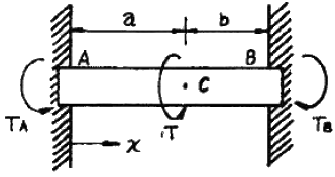
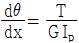
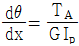
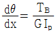
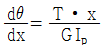
(정답률: 36%)
6. 양단 힌지로 지지된 목재의 장주가 200mm×200mm의 정사각형 단면을 가질 때 좌굴 하중은 약 몇 kN인가? (단, 길이 L = 5m, 탄성계수 E = 10GPa, 오일러공식을 적용한다.)
- 330
- 430
- 530
- 630
(정답률: 55%)
7. 일단은 고정, 티단(B지점)은 스프링(스프링상수 k)으로 지지하고, 이 B점에 하중 P를 작용할 때 B지점의 반력은? (단, 보의 굽힘강성 EI는 일정하다.)
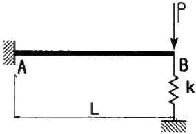
- P
- 0
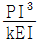
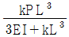
(정답률: 30%)
8. 다음 그림과 같은 부채꼴의 도심(centroid)의 위치
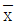
는?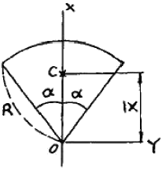
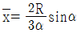
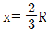
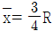
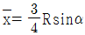
(정답률: 41%)
9. 지름이 d이고 길이가 L인 강봉에 인장하중 P가 작용하고 있다. 강붕의 탄성계수가 E라 하면 강봉의 전체 탄성 에너지 U는 얼마인가?
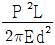
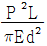
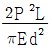
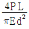
(정답률: 54%)
10. 그림과 같이 균일분포 하중을 받는 보의 지점 B에서의 굽힘모멘트는 몇 kNㆍm 인가?
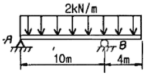
- 16
- 8
- 10
- 1.6
(정답률: 45%)
11. 그림과 같이 집중 하중 P가 외팔보의 중앙 및 끝단에서 각각 작용할 때, 최대 처짐량은? (단, 보의 굽힘 강성 EI는 일정하고, 자중은 무시한다.)
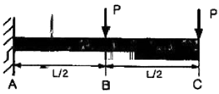
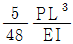
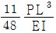
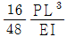
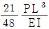
(정답률: 47%)
12. 보의 전 길이(L)에 걸쳐 균일 분포하중이 작용하고 있는 단순보와 양단이 고정된 양단 고정보의 중앙(L/2)에서 발생하는 처짐량의 비는?
- 2 : 1
- 3 : 1
- 4 : 1
- 5 : 1
(정답률: 40%)
13. 보가 굽었을 때 곡률 반지름에 대한 설명으로 맞는 것은?
- 단면 2차모멘트에 반비례한다.
- 굽힘모멘트에 반비례한다.
- 탄성계수에 반비례한다.
- 하중에 비례한다.
(정답률: 51%)
14. 그림에서 784.8N과 평형을 유지하기 위한 힘 F1과 F2는?
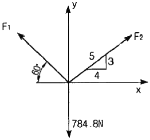
- F1 = 395.2N, F2 = 632.4N
- F1 = 632.4N, F2 = 395.2N
- F1 = 790.4N, F2 = 632.4N
- F1 = 790.4N, F2 = 395.2N
(정답률: 54%)
15. 원형단면을 가진 단순지지 보의 직경을 3배로 늘리고 같은 전단력이 작용한다고 하면, 그 단면에서의 최대 전단응력은 직경을 늘리기 전의 몇 배가 되는가?
- 1/3
- 1/9
- 1/36
- 1/81
(정답률: 51%)
16. 지름이 2m이고 1000kPa 내압이 작용하는 원통형 압력 용기의 최대 사용응력이 200MPa이다. 용기의 두께는 약 몇 mm인가? (단, 안전계수는 2 이다.)
- 5
- 7.5
- 10
- 12.5
(정답률: 45%)
17. 그림과 같이 지름 50mm의 축이 인장하중 P = 120kN과 토크 T = 2.4kNㆍm를 받고 있다. 최대 주응력은 약 몇 MPa인가?
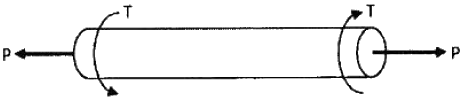
- 61.1
- 97.8
- 133.0
- 158.9
(정답률: 26%)
18. 그림에서 A지점에서의 반력 RA를 구하면 약 몇 N인가?
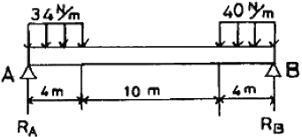
- 107
- 127
- 136
- 139
(정답률: 52%)
19. 다음 그림과 같이 인장력 P가 작용하는 봉의 경사 단면 A-B에서 발생하는 법선응력과 전단응력이 각각 σn = 10MPa, τ = 6MPa 일 때, 경사각 ø는 약 몇 도인가?
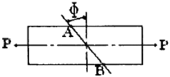
- 25°
- 31°
- 35°
- 41°
(정답률: 41%)
20. 그림과 같이 단순화한 길이 1m의 차축 중심에 집중하중 100kN이 작용하고, 100rpm으로 400kW의 동력을 전달할 때 필요한 차축의 지름은 최소 몇 cm인가? (단, 축의 허용 굽힘응력은 85MPa로 한다.)
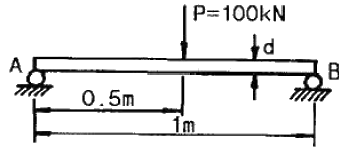
- 4.1
- 8.1
- 12.3
- 16.3
(정답률: 26%)
2과목: 기계열역학
21. 기체가 0.3MPa로 일정한 압력 하에 8m3에서 4m3까지 마찰 없이 압축되면서 동시에 500kJ의 열을 외부에 방출하였다면, 내부에너지(kJ)의 변화는 얼마나 되겠는가?
- 약 700
- 약 1700
- 약 1200
- 약 1300
(정답률: 37%)
22. 이상기체의 가역단열 변화에서는 압력 P, 체적 V, 절대온도 T 사이에 어떤 관계가 성립하는가? (단, 비열비 k = Cp/Cv 이다.)
- PV = 일정
- PVk-1 = 일정
- PTk = 일정
- TVk-1 = 일정
(정답률: 34%)
23. 어떤 가스의 비내부에너지 u(kJ/kg), 온도 t(℃), 압력 P(kPa), 비체적 v(m3/kg) 사이에는 다음의 관계식이 성립한다. 이 가스의 정압비열은 얼마 정도이겠는가?
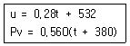
- 0.84 kJ/kg℃
- 0.68 kJ/kg℃
- 0.50 kJ/kg℃
- 0.28 kJ/kg℃
(정답률: 40%)
24. 공기표준 Carnot 열기관 사이클에서 최저 온도는 280K이고, 열효율은 60%이다. 압축전 압력과 열을 방출한 후 압력은 100 kPa이다. 열을 공급하기 전의 온도와 압력은? (단, 공기의 비열비는 1.4이다.)
- 700 K, 2470 kPa
- 700 K, 2200 kPa
- 600 K, 2470 kPa
- 600 K, 2200 kPa
(정답률: 44%)
25. 가역단열펌프에 100 kPa, 50℃의 물이 2 kg/s로 들어가 4 MPa로 압축된다. 이 펌프의 소요 동력은? (단, 50℃에서 포화액체(saturated liquid)의 비체적은 0.001 m3/kg이다.)
- 3.9 kW
- 4.0 kW
- 7.8 kW
- 8.0 kW
(정답률: 31%)
26. 증기터빈 발전소에서 터빈 입출구의 엔탈피 차이는 130 kJ/kg이고, 터빈에서의 열손실은 10 kJ/kg이었다. 이 터빈에서 얻을 수 있는 최대 일은 얼마인가?
- 10 kJ/kg
- 120 kJ/kg
- 130 kJ/kg
- 140 kJ/kg
(정답률: 35%)
27. 이상기체 1 kg이 가역등온 과정에 따라 P1 = 2 kPa, V1 = 0.1 m3로 부터 V2 = 0.3 m3 로 변화했을 때 기체가 한 일은 몇 주울(J)인가?
- 9540
- 2200
- 954
- 220
(정답률: 49%)
28. 400 K의 물 1.0 kg/s와 350 K의 물 0.5 kg/s가 정상과정으로 혼합되어 나온다. 이 과정 중에서 300 kJ/s의 열손실이 있다. 출구에서 물의 온도는 약 얼마인가? (단, 물의 비열은 4.18 kJ/kgㆍK이다.)
- 369.2 K
- 350.1 K
- 335.5 K
- 320.3 K
(정답률: 32%)
29. 잘 단열된 노즐에서 공기가 0.45 MPa에서 0.15 MPa로 팽창한다. 노즐 입구에서 공기의 속도는 50 m/s, 온도는 150℃이며 출구에서의 온도는 45℃이다. 출구에서의 공기 속도는? (단, 공기의 정압비열과 정적비열은 1.0035 kJ/kgㆍK, 0.7165 kJ/kgㆍK 이다.)
- 약 350 m/s
- 약 363 m/s
- 약 445 m/s
- 약 462 m/s
(정답률: 11%)
30. 어떤 냉장고의 소비전력이 200 W이다. 이 냉장고가 부엌으로 배출하는 열이 500 W라면, 이때 냉장고의 성능계수는 얼마인가?
- 1
- 2
- 0.5
- 1.5
(정답률: 45%)
31. 증기동력 사이클에 대한 다음의 언급 중 옳은 것은?
- 이상적인 보일러에서는 등온 가열 과정이 진행된다.
- 재열 사이클은 주로 사이클 효율을 낮추기 위해 적용한다.
- 터빈의 토출 압력을 낮추면 사이클 효율도 낮아진다.
- 최고 압력을 높이면 사이클 효율이 높아진다.
(정답률: 35%)
32. 압력 5 kPa, 체적이 0.3 m3인 기체가 일정한 압력 하에서 압축되어 0.2 m3로 되었을 때 이 기체가 한 일은? (단, + 는 외부로 기체가 일을 한 경우이고, - 는 기체가 외부로부터 일을 받은 경우)
- 500 J
- -500 J
- 1000 J
- -1000 J
(정답률: 47%)
33. 시스템의 온도가 가열과정에서 10℃에서 30℃로 상승하였다. 이 과정에서 절대온도는 얼마나 상승 하였는가?
- 11 K
- 20 K
- 293 K
- 303 K
(정답률: 48%)
34. 공기 10 kg이 압력 200 kPa, 체적 5 m3인 상태에서 압력 400 kPa, 온도 300℃인 상태로 변했다면 체적의 변화는? (단, 공기의 기체상수 R = 0.287 kJ/kgㆍK이다.)
- 약 +0.6 m3
- 약 +0.9 m3
- 약 -0.6 m3
- 약 -0.9 m3
(정답률: 47%)
35. 다음 사항은 기계열역학에서 일과 열(熱)에 대한 설명이다. 이 중 틀린 것은?
- 일과 열은 전달되는 에너지이지 열역학적 상태량은 아니다.
- 일의 단위는 J(joule)이다.
- 일(work)의 크기는 힘과 그 힘이 작용하여 이동한 거리를 곱한 값이다.
- 일과 열은 점함수이다.
(정답률: 46%)
36. 다음 그림은 오토사이클의 P-V 선도이다. 그림에서 3-4가 나타내는 과정은?
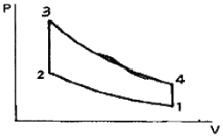
- 단열 압출과정
- 단열 팽창과정
- 정적 가열과정
- 정적 방열과정
(정답률: 38%)
37. 열펌프의 성능계수를 높이는 방법이 아닌 것은?
- 응축 온도를 낮춘다.
- 증발 온도를 낮춘다.
- 손실 일을 줄인다.
- 생성엔트로피를 줄인다.
(정답률: 34%)
38. 매시간 20 kg의 연료를 소비하는 100 PS 인 가솔린 기관의 열효율은 약 얼마인가? (단, 1 PS = 750 W이고, 가솔린의 저위발열량은 43470 kJ/kg이다.)
- 18 %
- 22 %
- 31 %
- 43 %
(정답률: 49%)
39. 10 kg의 증기가 온도 50℃, 압력 38 kPa, 체적 7.5 m3일 때 총 내부에너지는 6700 kJ이다. 이와 같은 상태의 증기가 가지고 있는 엔탈피(enthalpy)는 몇 kJ인가?
- 1606
- 1794
- 23⑤
- 6985
(정답률: 53%)
40. 227℃의 증기가 500 kJ/kg의 열을 받으면서 가역등온 팽창한다. 이때 증기의 엔트로피 변화는 약 얼마인가?
- 1.0 kJ/kgㆍK
- 1.5 kJ/kgㆍK
- 2.5 kJ/kgㆍK
- 2.8 kJ/kgㆍK
(정답률: 51%)
3과목: 기계유체역학
41. 정상상태인 포텐셜 유동에 대한 정지한 경계면에서의 경계조건은?
- 경계면에서 속도가 0이다.
- 경계면에서 그 면에 대한 직각 방향의 속도성분이 0이다.
- 경계면에서 그 면에 대한 절선 방향의 속도성분이 0이다.
- 경계면에서 경계면이 등 포텐셜선이어야 한다.
(정답률: 22%)
42. 다음 중에서 차원이 다른 물리량은?
- 압력
- 전단응력
- 동력
- 체적탄성계수
(정답률: 48%)
43. 그림과 같이 수두 Hm에서 오리피스의 유출속도가 V m/s이라면 유출속도를 2V로 하기 위해서는 H를 얼마로 해야 하는가?
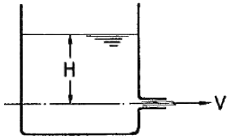
- 2H
- 3H
- 4H
- 6H
(정답률: 46%)
44. 수평 파이프의 직경이 입구 D에서 출구
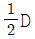
로 감소되었을 때 비압축성 유체의 입구 유속 V에 대한 출구 유속으로 맞는 것은?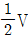
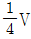
- 2V
- 4V
(정답률: 40%)
45. 그림과 같이 아주 큰 저수조의 하부에 연결된 터빈이 있다. 직경 D = 10 cm인 노즐로부터 대기 중으로 분출되는 유량은 0.08 m3/s이고 터빈 출력이 15 kW일 때 수면 높이 H는 약 몇 m 인가? (단, 터빈의 효율은 100%이고, 수면으로부터 출구 사이의 손실은 무시하며, 수면은 일정하게 유지된다고 가정한다.)
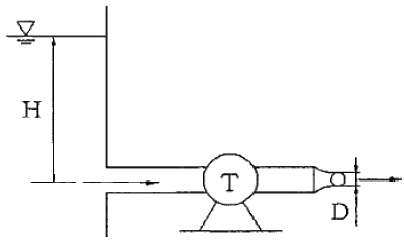
- 17.2
- 21.7
- 24.4
- 29.1
(정답률: 23%)
46. 국소 대기압이 700mmHg 일 때 절대압력은 40 kPa이다. 이는 게이지 압력으로 얼마인가?
- 47.7 kPa 진공
- 45.3 kPa 진공
- 40.0 kPa 진공
- 53.3 kPa 진공
(정답률: 51%)
47. 그림과 같은 관에 유리관 A, B를 세우고 물을 흐르게 했을 때 유리관 B의 상승높이 h2는 약 몇 cm인가?
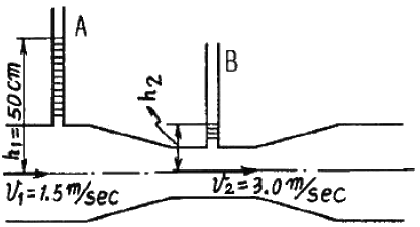
- 34.4
- 10
- 15.6
- 12.5
(정답률: 42%)
48. 그림과 같이 수조에 안지름이 균일한 관을 연결하고 관의 한 점의 정압을 측정할 수 있도록 액주계를 설치하였다. 액주계의 높이 H가 나타내는 것은?
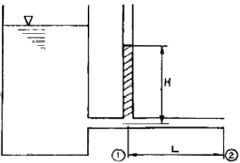
- 관의 길이 L 에서 생긴 손실수두와 같다.
- 수조 내의 액체가 갖는 단위 중량당의 총 에너지를 나타낸다.
- 관에 흐르는 액체의 전압과 같다.
- 관에 흐르는 액체의 동압을 나타낸다.
(정답률: 32%)
49. 평행한 평판 사이의 충류 흐름을 해석하기 위해서 필요한 무차원수와 그 의미를 바르게 나타낸 것은?
- 레이놀즈 수 = 관성력 / 점성력
- 레이놀즈 수 = 관성력 / 탄성력
- 프루드 수 = 중력 / 관성력
- 프루드 수 = 관성력 / 점성력
(정답률: 54%)
50. 물을 이용한 기압계는 왜 실제적이지 못한가?
- 대기압이 물기둥을 지탱할 수 없다.
- 물기둥의 높이가 너무 높다.
- 표면장력의 영향이 너무 크다.
- 정수역학의 방정식을 적용할 수 없다.
(정답률: 33%)
51. 내경이 50mm인 180° 곡관(bend)을 통하여 물이 5m/s의 속도와 0의 계기압력으로 흐르고 있다. 물이 곡관에 작용하는 힘은 약 몇 N인가?
- 0
- 24.5
- 49.1
- 98.2
(정답률: 41%)
52. 2차원 직각 좌표계 (x, y) 상에서 속도 포텐셜(velocity potential)이 ø = -3x2y + y3 으로 주어지는 어떤 이상유체에 대한 유동장이 있다. 점 (-1, 2)에서의 유속의 방향이 x축과 이루는 각도(degree)는?
- 36.9°
- 51.5°
- 62.7°
- 71.6°
(정답률: 28%)
53. 1/10 크기의 모형 잠수함을 해수 밀도의 1/2, 해수 점성 계수의 1/2인 액체 중에서 실험한다. 실제 잠수함을 2 m/s로 운전하려면 모형 잠수함은 몇 m/s의 속도로 실험해야 하는가?
- 20
- 1
- 0.5
- 4
(정답률: 48%)
54. 난류에서 평균 전단응력과 평균 속도구배의 비를 나타내는 점성계수는?
- 유동의 혼합 길이와 평균 속도구배의 함수로 나타낼 수 있다.
- 유체의 성질이므로 온도가 주어지면 일정한 상수이다.
- 뉴턴의 점성법칙으로 구한다.
- 임계 레이놀즈수를 이용하여 결정한다.
(정답률: 16%)
55. 원관 내 완전히 발달된 난류 속도분포
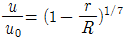
[R:반지름] 에 대한 단면 평균속도는 중심속도 u0 의 몇 배인가?- 0.5
- 0.571
- 0.667
- 0.817
(정답률: 11%)
56. 아래 그림과 같이 폭이 3m이고, 높이가 4 m인 수문의 상단이 수면 아래 1m에 놓여있다. 이 수문에 작용하는 물에 의한 전압력의 작용점을 수면 아래로 몇 m 인가?
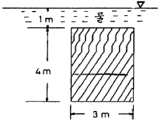
- 3.77
- 3.44
- 3.00
- 2.36
(정답률: 33%)
57. 다음 중 음속의 표현식이 아닌 것은? (단, k = 비열비, P = 절대압력, ρ = 밀도, T = 절대온도, E = 체적탄성계수, R = 기체상수)
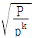
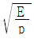
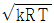
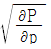
(정답률: 35%)
58. 아주 긴 원관에서 유체가 완전 발달된 층류(laminar flow)로 흐를 때 전단응력은 반경 방향으로 어떻게 변화하는가?
- 전단응력은 일정하다.
- 관 벽에서 0이고, 중심까지 포물선 형태로 증가한다.
- 관 중심에서 0이고, 관 벽까지 선형적으로 증가한다.
- 관 벽에서 0이고, 중심까지 선형적으로 증가한다.
(정답률: 42%)
59. 몸무게가 750N인 조종사가 지름 5.5m의 낙하산을 타고 비행기에서 탈출하고 있다. 항력계수가 1.0이고, 낙하산의 무게를 무시한다면 조종사의 최대 종속도는 약 몇 m/s가 되는가? (단, 공기의 밀도는 1.2 kg/m3이다.)
- 7.25
- 8
- 5.26
- 10
(정답률: 45%)
60. 12mm의 간격을 가진 평행한 평판 사이에 점성계수가 0.4 Nㆍs/m2인 기름이 가득 차 있다. 아래쪽 판을 고정하고 윗판을 3 m/s인 속도로 움직일 때 발생하는 전단응력은 몇 N/m2인가?
- 100
- 200
- 300
- 400
(정답률: 47%)
4과목: 기계재료 및 유압기기
61. 특수청동 중 열전대 및 뜨임시효 경화성 합금으로 사용되는 것은?
- 인청동
- 알루미늄청동
- 베릴륨청동
- 니켈청동
(정답률: 37%)
62. 다음은 특수강 제조용 첨가원소의 영향들 중에서 고속도강이 고온에서 기계적 성질을 계속 유지하는 것과 가장 관련이 많은 것은?
- 경화능 상승
- 고용경화
- 탄화물 형성
- 내식성 상승
(정답률: 35%)
63. 다음 중 공석강의 탄소함유량으로 가장 적절한 것은?
- 약 0.08%
- 약 0.02%
- 약 0.2%
- 약 0.8%
(정답률: 55%)
64. 다음 금속 중 비중이 가장 큰 것은?
- Fe
- Al
- Pb
- Cu
(정답률: 60%)
65. 다음 중 구상흑연 주철을 설명한 것으로 틀린 것은?
- 용선에 마그네슘(Mg)을 첨가함으로써 구상흑연 조직을 얻는다.
- 세륨(Ce)을 첨가하여도 구상흑연 조직을 얻는다.
- 구상흑연 주철은 흑연에 의한 노치(notch)작용이 적기 때문에 강인하다.
- 구상흑연 주철은 편상흑연 주철 보다 연성이 낮다.
(정답률: 52%)
66. 담금질 균열의 원인이 아닌 것은?
- 담금질온도가 너무 높다.
- 냉각속도가 너무 빠르다.
- 가열이 불균일하다.
- 담금질하기 전에 노멀라이징을 충분히 했다.
(정답률: 66%)
67. 구리에 65~70% Ni을 첨가한 것으로 내열 내식성이 우수하므로 터빈 날개, 펌프 임펠러 등의 재료로 사용되는 합금은?
- 콘스탄탄
- 모넬메탈
- Y 합금
- 문쯔메탈
(정답률: 48%)
68. 다음 STC에 관한 설명이 잘못된 것은?
- STC는 탄소 공구강이다.
- 인(P)와 황(S)의 양이 적은 것이 양질이다.
- 주로 림드강으로 만들어진다.
- 탄소의 함량이 0.6 ~ 1.5% 정도이다.
(정답률: 48%)
69. 주철 중에 함유되어 있는 유리탄소는 무엇인가?
- Fe3C
- 화합탄소
- 전탄소
- 흑연
(정답률: 39%)
70. 특수강의 질량효과(mass effect)와 경화능에 관한 다음 설명 중 옳은 것은?
- 질량효과가 큰 편이 경화능을 높이고 Mn, Cr 등은 질량효과를 크게 한다.
- 질량효과가 큰 편이 경화능을 높이고 Mn, Cr 등은 질량효과를 작게 한다.
- 질량효과가 작은 편이 경화능을 높이고 Mn, Cr 등은 질량효과를 크게 한다.
- 질량효과가 작은 편이 경화능을 높이고 Mn, Cr 등은 질량효과를 작게 한다.
(정답률: 35%)
71. 단단 베인 펌프 2개를 1개의 본체 내에 직렬로 연결시킨 베인 펌프를 무엇이라 하는가?
- 2단 베인 펌프(two stage vane pump)
- 2중 베인 펌프(double type vane pump)
- 복합 베인 펌프(combination vane pump)
- 가변 용량형 베인 펌프(variable delivery vane pump)
(정답률: 46%)
72. 피스톤 펌프의 일반적인 특징을 설명한 것으로 틀린 것은?
- 가변 용량형 펌프로 제작이 가능하다.
- 피스톤의 배열에 따라 외접식과 내접식으로 나눈다.
- 누설이 작아 체적효율이 좋은 편이다.
- 부품수가 많고 구조가 복잡한 편이다.
(정답률: 38%)
73. 속도 제어 회로 방식 중 미터-인 회로와 미터-아웃 회로를 비교하는 설명으로 틀린 것은?
- 미터-인 회로는 피스톤 측에만 압력이 형성되나 미터-아웃 회로는 피스톤 측과 피스톤 로드 측 모두 압력이 형성된다.
- 미터-인 회로는 단면적이 넓은 부분을 제어하므로 상대적으로 유리하나, 미터-아웃 회로는 단면적이 좁은 부분을 제어하므로 상대적으로 불리하다.
- 미터-인 회로는 인장력이 작용할 때 속도조절이 불가능하나, 미터-아웃 회로는 부하의 방향에 관계없이 속도 조절이 가능하다.
- 미터-인 회로는 탱크로 드레인되는 유압 작동유에 열이 발생하나, 미터-아웃 회로는 실린더로 공급되는 유압작동유에 열이 발생한다.
(정답률: 47%)
74. 밸브 몸체의 위치 중 주관로의 압력이 걸리고 나서, 조작력에 의하여 예정 운전 사이클이 시작되기 전의 밸브 몸체 위치에 해당하는 용어는?
- 초기 위치(Initial position)
- 중앙 위치(Middle position)
- 중간 위치(Intermediate position)
- 과도 위치(Transient position)
(정답률: 37%)
75. 유압 작동유 선정 시 고려되어야 할 사항으로 거리가 먼 것은?
- 화학적으로 안정될 것
- 점도 지수가 작을 것
- 체적 탄성계수가 클 것
- 방열성이 클 것
(정답률: 49%)
76. 밸브의 전환 도중에서 과도적으로 생기는 밸브 포트 사이의 흐름을 의미하는 용어는?
- 컷오프(cut-off)
- 인터플로(Interflow)
- 배압(back pressure)
- 서지압(surge pressure)
(정답률: 64%)
77. 축압기(어큐뮬레이터)의 용량이 10L, 기체의 봉입압력이 3.5 MPa일 때 작동유압이 5.9 MPa에서 3.9 MPa까지 변화할 때 가스 방출량은 약 몇 L 인가?
- 3.0
- 4.5
- 1.2
- 2.3
(정답률: 21%)
78. 채터링(chattering) 현상에 대한 설명으로 옳은 것은?
- 유량제어밸브의 개폐가 연속적으로 반복되어 심한 진동에 의한 밸브 포트에서의 누설 현상
- 유동하고 있는 액체의 압력이 국부적으로 저하되어 증기나 함유 기체를 포함하는 기체가 발생하는 현상
- 강압밸브, 체크밸브, 릴리프밸브 등에서 밸브시트를 두드려 비교적 높은 소음을 내는 자려 진동 현상
- 슬라이드 밸브 등에서 밸브가 중립점에서 조금 변위하여 포트가 열릴 때, 발생하는 압력증가 현상
(정답률: 63%)
79. 방향전환 밸브 중 탠덤 센터형으로 실린더의 임의의 위치에서 고정시킬 수 있고, 펌프를 무부하 운전시킬 수 있는 밸브는?
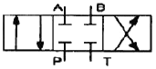
(정답률: 40%)
80. 다음 유압 작동유 중 난연성 작동유에 해당하지 않는 것은?
- 물-글리콜형 작동유
- 인산 에스테르형 작동유
- 수중 유형 작동유
- R&O 형 작동유
(정답률: 47%)
5과목: 기계제작법 및 기계동력학
81. 절삭과정에 공구에 열전대를 삽입하기 위한 가공방법으로 다음 중 가장 적합한 것은?
- 화학 연마
- 전해 연마
- 방전 가공
- 버핑 가공
(정답률: 31%)
82. 테일러의 절삭공구 수영식 (VTn = C) 에서 T와 V의 좌표 관계를 모눈종이에 표시하면 기울기는 어떻게 그려지는가? (단, 여기서 T는 공구수명, V는 절삭속도, C는 상수이다.)(오류 신고가 접수된 문제입니다. 반드시 정답과 해설을 확인하시기 바랍니다.)
- 직선
- 포물선
- 지수곡선
- 쌍곡선
(정답률: 26%)
83. 수퍼피니싱(super finishing)의 특징이 아닌 것은?
- 다듬질 면은 평활하고, 방향성은 없다.
- 원통형의 가공물 외면, 내면의 정밀다듬질이 가능하다.
- 가공에 의한 표면변질 층이 극히 미세하다.
- 입도가 비교적 크며, 경한 숫돌에 큰 압력으로 가압한다.
(정답률: 46%)
84. 프로젝션 용접(projection welding)에 대한 설명이 틀린 것은?
- 돌기부는 모재의 두께가 서로 다를 경우, 얇은 판재에 만든다.
- 돌기부는 모재가 서로 다른 금속일 때, 열전도율이 큰 쪽에 만든다.
- 판의 두께나 열용량이 서로 다른 것을 쉽게 용접할 수 있다.
- 용접속도가 빠르고 돌기부에 전류와 가압력이 균일해 용접의 신뢰도가 높다.
(정답률: 41%)
85. 두께 3mm, 장경이 50mm, 단경이 30mm인 강판을 블랭킹하는데 필요한 펀치력은 얼마인가? (단, 강판의 전단 저항을 45 N/mm2로 한다.)(오류 신고가 접수된 문제입니다. 반드시 정답과 해설을 확인하시기 바랍니다.)
- 약 8.9 N
- 약 9.8 N
- 약 17 N
- 약 19 N
(정답률: 23%)
86. H형강을 압연하기 위하여 특별히 구조한 압연기다. 동일 평면에 상하 수평롤러와 좌우 수직롤러의 축심이 있는 압연기는?
- 유니버셜 압연기
- 플러그 압연기
- 로터리 압연기
- 릴링 압연기
(정답률: 42%)
87. 주조작업에서 원형 제작시 고려해야 할 사항이 아닌 것은?
- 수축 여유
- 가공 여유
- 구배량(draft)
- 스프링 백(spring back)
(정답률: 47%)
88. 구성인선(built up edge)을 감소시키는 다음 방법 중 옳은 것은?
- 절삭속도를 크게 한다.
- 윗면 경사각을 작게 한다.
- 절삭 깊이를 깊게 한다.
- 마찰 저항이 큰 공구를 사용한다.
(정답률: 57%)
89. 선반가공에서 가공시간과 관련성을 가지는 것은?
- 절삭깊이 × 이송
- 절삭율 × 절삭원가
- 이송 × 분당회전수
- 절삭속도 × 이송 × 절삭깊이
(정답률: 41%)
90. 열처리 곡선에서 TTT곡선과 관계있는 것은?
- 탄성-소성 곡선
- 항온-변태 곡선
- 인장-변형 곡선
- Fe-C 곡선
(정답률: 52%)
91. 다음 그림에 나타낸 위치에서 질량 m인 균일한 봉이 병전 운동을 할 때 필요한 힘 P를 구하면? (단, 마찰력은 무시한다.)
- mg
(정답률: 44%)
92. 평면상에서 운동하고 있는 로봇 팔의 끝단 P점의 위치를 극좌표계로 나타내면 다음과 같다. t = 1 일 때 P 점의 가속도의 크기로서 맞는 것은?
- π2
- 2π2
- 3π2
- 4π2
(정답률: 18%)
93. 질량이 50 kg인 바퀴의 질량관성모멘트가 8 kgㆍm2 이라면 이 바퀴의 회전반경은 몇 m인가?
- 0.2
- 0.3
- 0.4
- 0.5
(정답률: 30%)
94. 10 m/s의 속도로 움직이는 10 kg인 물체가 정지하고 있는 5 kg의 물체에 정면 중심 충돌한다면 충돌 후 질량 5 kg인 물체의 속도는 몇 m/s 인가? (단, 반발계수는 0.8 이다.)
- 4
- 8
- 10
- 12
(정답률: 35%)
95. 지표면에서 공을 초가속도 vo로 수직 상방으로 던졌다. 공이 제자리로 돌아올 때까지 걸린 시간은? (단, 공기저항은 무시한다.)
(정답률: 43%)
96. 자유도(Degree of Freedom)에 대한 설명 중 옳은 것은?
- 한 주기 동안에 완성된 조화운동
- 단위시간 동안 이루어진 운동의 사이클 수
- 운동을 기술하는데 필요한 최소 좌표의 수
- 운동자체를 반복하는데 필요한 시간
(정답률: 44%)
97. 그림과 같이 줄의 길이 L, 질량 m인 공을 1의 위치에서 놓을 때, 2의 위치까지 공이 오려면 최초의 위치각 α는 몇 도이면 되는가? (단, 마찰력, 공기저항, 줄의 질량은 무시한다.)
- 30도
- 45도
- 60도
- 90도
(정답률: 24%)
98. 감쇠진동계의 조화가진에서 공진이 발생할 때 외력과 변위의 위상각은 서로 몇 도 차이가 나는가?
- 0°
- 30°
- 60°
- 90°
(정답률: 33%)
99. 그림의 진동계를 자유 진동시킬 때 변위 x(t)는 로 표시된다. 여기서 감쇠계수 , 비감쇠 진동수 , 감쇠진동수 ω4 사이에 성립되는 관계식은?
(정답률: 42%)
100. 무게 468N인 큰 기계가 스프링으로 탄성 지지되어 있다. 이 스프링의 정적 변위(정적 수축량)가 0.24cm일 때 비감쇠 고유진동수는 약 몇 Hz인가?
- 6.5
- 10.2
- 8.3
- 7.4
(정답률: 39%)
한 못이 버틸 수 있는 최대 전단력은 2kN 이므로, 두 못이 겹쳐져 있는 부분에서는 전단력이 4kN을 초과하지 않도록 해야 한다. 따라서 두 못 사이의 최소 간격은 4kN을 버틸 수 있는 간격인 0.25m 이어야 한다.
따라서 정답은 "0.25m" 이다.